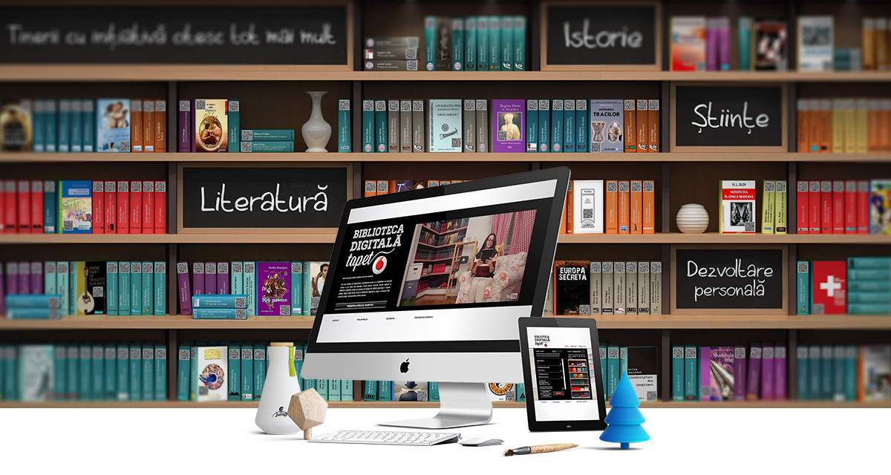

Tentang Perpustakaan Digital Kami

Selamat datang di Perpustakaan Digital kami! Kami adalah sumber daya pembelajaran modern yang didedikasikan untuk menyediakan akses mudah ke berbagai materi pendidikan dan literatur.
Misi kami adalah untuk mendukung pembelajaran seumur hidup dan meningkatkan literasi digital di masyarakat. Dengan koleksi yang luas dan layanan yang inovatif, kami berkomitmen untuk memenuhi kebutuhan pendidikan dan penelitian pengguna kami.
Layanan Kami
- Akses 24/7 ke sumber daya digital
- 8 modul pembelajaran interaktif
- Koleksi e-book dan jurnal ilmiah
- Layanan konsultasi penelitian online
- Program literasi digital